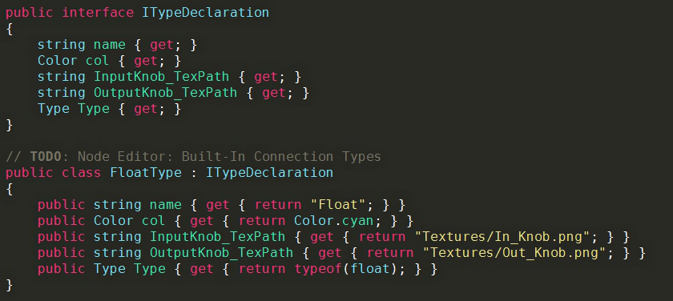

NODE EDITOR
Free and versatile Node Editor Framework for Unity 3D

(Texture Composer, an example avaiable on the forums)
Documentation by Seneral
Version 1.02 (30.01.16)
Repository
-
Forums
Contents
Preface
Features
Examples
Getting Started
Custom Nodes
Custom ConnectionTypes
Customization
Interface
Framework Overview
Events
Conclusion
Preface
This Documentation intends to give you an overview of the Node Editor. It was initially posted by me, Seneral,
as a personal project on the Unity forums.
After receiving a great amount of positive feedback I continued improving and supporting it, now featuring alot of major things a Node Editor needs to have!
The GitHub repository was set up by Baste during the early developement,
and now it's the main platform to share and contribute to Node Editor.
Features
The Node Editor is special in that it's open source, but still is packed full of features, some of which are very unique to this project and which we're proud of featuring:
- Full interface featuring all expected controls like zooming/panning
- Flexible and interchangeable GUI
- Canvas and Editor State system featuring alot of advanced controls
- Super easy to extend with custom nodes and types without modifying the provided code
- Flexible calculation system, soon supporting for state-like behaviour
- Extreme Node customization to create totally unique node appearances achieved by a custom windowing system
- Growing Runtime support, including every bit from the EditorWindow
The framework also shines with clean and easy to modify code. It's clearly seperated in multiple parts, some of which can even be taken and used somewhere else, such as the unique, generic scaling approach!
Examples
You can start off by checking out the Editor Window at 'Window/Node Editor' and loading one of the example canvases, such as the CalculationCanvas.
Do that by either loading it with the button at the top right or by locating it in the project folder and double-clicking it.
With right-click you can add additional nodes, using drag'n'drop you can connect node Outputs and Inputs with each other.
Getting Started
Here you'll find some help on how to get you started creating custom Nodes and ConnectionTypes in the simplest form, without touching the Framework code.
These two methods already can help you make little extensions requiring the Node Editor Framework to be installed seperately.
Custom Nodes
The implementation of additional, custom nodes is fairly easy. You have to create a script anywhere in the project extending the Node class of the NodeEditorFramework namespace.
It will provide the Framework all needed information about the node itself, the optional Node Attribute contains information about the presentation in the editor.
The Framework will search all script assemblies for additional nodes, so extra setup is not required.
In the following are the necessary Node members outlined, based upon the ExampleNode found at 'Plugins/Node_Editor/Nodes'.
First to mention is that even though the Framework is programmed in C#, you can add nodes in UnityScript with the limitation that they have to be compiled in phase 2,3 or 4,
as described here. Therefore the following members are described language independently.
NodeEditorFramework dependency- Class extending
Node
- Optional: Attribute
Node [Params: [Bool] hide; [String] contextPath]
- Unique Node ID; declare:
ID [constant string]; expose: property GetID [override]
-
Optional: Behaviour Options
AllowRecursion [override, default: false]ContinueCalculation [override, default: true]AcceptsTransitions [override, default: false]
-
Method
Create [override; Params: [Vector2] position; Return: [Node] Created Node]
- Create a new Instance of your node type using
CreateInstance. Assign it's property rect using the position parameter and give it a name.
- Add connections using
CreateInput/CreateOutput or NodeInput.Create / NodeOutput.Create [Params: Name; TypeName; NodeSide; position]
- Perform any other additional setup steps and return your created node
-
Method
NodeGUI [override]
- Draw your Node's GUI in it. You may use GUILayout funtions
- Access the Inputs/Outputs using the Inputs/Outputs array in the creation order. Use their methods
DisplayLayout or SetPosition to position (and draw) them
-
Method
Calculate [override; Returns: [Bool] Calculation success]
- The methods
allInputsReady, hasUnassignedInputs and descendantsCalculated may help to check if the node is ready, based on the needs and purposes of it.
- Access the inputs as described above, call
GetValue to get the value stored in the connection of the same type. Similarily, set the output values with SetValue.
-
Return true when you're done calculating and false when you are not ready yet and need another attempt.
But be aware, you cannot yield calculation that way, after a maximum of a thousand repeated tries the calculation will be aborted!
Custom ConnectionTypes
Implementing custom ConnectionTypes is similar to Node implementation, as it uses the same fetching system:
Declare a class inheriting from the ITypeDeclaration interface and specify it's properties.

ConnectionTypes.cs: Top Block: ITypeDeclaration; Bottom Block: Built-in Float type
- The string name is used to adress the type later on
- The Color col is the color associated with the type, and the following knob textures aswell as the node connection curves are tinted with it
-
The strings InputKnob_TexPath and OutputKnob_TexPath are the paths to the input and output knob textures relative to Node_Editor/Resources.
Defaults are Textures/In_Knob.png and Textures/Out_Knob.png.
- The type this declaration representates (e.g. 'typeof(float)') is stored in the Type 'Type'.
Customizing
Even though you can already built small extensions with methods described above pretty well, to natively integrate Node Editor into your
own editor extension you may want to cutomize it, from building your own editor interface to modifying and extending the framework itself.
Interface
The provided Editor Window basically serves as the default Node Canvas explorer for all dependant extensions and single canvases,
but also as a starting point to develop a custom Editor Window from. That means, you can savely delete it if you don't want it in your extension.
In the following I'll outline all things you need to consider to build a basic Node Editor Interface in both Runtime and the Editor.
Saving and Loading Canvas and Editor State
The Editor needs to store the currently opened Canvas (NodeCanvas) and it's Editor State (NodeEditorState).
For an explanation of these, please look up the Framework Overview. You can save both using NodeEditor.SaveNodeCanvas
and load them with NodeEditor.LoadNodeCanvas and NodeEditor.LoadEditorStates.
Take reference from the default NodeEditorWindow to see how exactly these functions are integrated.
The function AutoOpenCanvas also shows how to automatically open a canvas by double-clicking it's asset in the Editor.
Bringing the Canvas on screen
First, you need to make sure that the NodeEditor is initiated using NodeEditor.checkInit, and that there is always a canvas loaded, else creating a new one.
Before drawing you'll want to define the rect in which the canvas is drawn. No boundaries are set anymore on where the canvas is set, in how many subgroups, etc.
Only the case of modifying the GUI.matrix scale before is not yet supported. You currently must assign the rect to the canvasRect property of the EditorState.
In order to best account for errors, the following drawing statement is embedded in a try-catch block catching only UnityExceptions, unloading the old and creating a new canvas when an error occurs.
Draw the canvas by passing both the NodeCanvas and the EditorState into NodeEditor.DrawCanvas, which will behave like an ordinary GUI control in most cases.
Custom GUISkin
The GUISkin of the Node Editor can currently only be changed by modifying the NodeEditorGUI.cs source file or by simply replacing the textures.
For the future a more extensive and seperated control over the GUISkin is planned.
Framework Overview
This section aims to bring you a decent overview on how the framework is structured, so you can get to modify it quickly.
This does not necessarily include implementation details – code sections that need extra detailing are commented.
Also, this section is not only for those planning to get into the code, but for everyone to get an overview what he's working with:)
NodeCanvas and NodeEditorState
Those two components essentially make up something you can load up into the Editor. Basically, the canvas is the important part with all the nodes and any additional information directly related to the Canvas.
In contrary, the EditorState holds all information on the state, or in other words, on how the Canvas is presented. This includes zoom and pan values, selected Nodes, the canvasRect, etc.
Not all of these values are actually saved with the asset, though. That structure allows for multiple 'views' on the same Canvas and editing it simultaneously.
The DrawCanvas function
This function acts very similar to any other GUI control, with a few exceptions, and is responsible for drawing the Canvas.
On the first glance it's just a wrapper for DrawSubCanvas, with the exception that it holds the OverlayGUI and NodeGUISkin code.
DrawSubCanvas is used in the future for Nested Canvases, as the name proposes.
In the first major block, the background texture is sliced and placd across the screen where needed, accounting for pan and zoom, relative to the rect center.
In the function InputEvents all inputs are catched. It's well commented, so no further explanation is necessary here. It accounts for Rects that should be ignored for input.
Then, the scale area gets initiated with a call to my custom solution GUIScaleUtility.BeginScale. Any GUI code afterwards is getting scaled appropriately.
In the following, everything that needs to be scaled gets drawn, including temporal connections, node transitions, connections, bodies and knobs.
Thereafter, the scale area gets closed again with another call to GUIScaleUtility.EndScale. The LateEvents function checks all inputs with secondary priority (after the nodes)
just like InputEvents does, in this case it only makes sure the node can only be dragged when not clicking on a control (GUI.hotControl is 0).
Events
(WIP)
The Framework supports a multitude of Events which might be important during the editing process. Those Events can either be received
by subscribing to the appropriate delegate in the NodeEditorCallbacks class or by extending from NodeEditorCallbackReceiver (which is a MonoBehaviour)
and overriding the appropriate method. Both classes can be found in NodeEditorCallbackReceiver.cs.
Current Events include:
OnEditorStartup (): The Node Editor gets initiated (can also happen when switching scene or playmode)OnLoadCanvas (NodeCanvas): The passed canvas has been loaded (copy)OnLoadEditorState (NodeEditorState): The passed editorState has been loaded (copy)OnSaveCanvas (NodeCanvas): The passed canvas has been saved (copy)OnSaveEditorState (NodeEditorState): The passed editorState has been saved (copy)OnAddNode (Node): The passed node has been created or duplicatedOnDeleteNode (Node): The passed node will get deletedOnMoveNode (Node): The passed node has been moved by the userOnAddConnection (NodeInput): A new connection has been added to the passed input. If it had a connection before, OnRemoveConnection has been called, tooOnRemoveConnection (NodeInput): The connection will get removed from this inputOnAddTransition (Transition): The passed transition has been createdOnRemoveTransition (Transition): The passed transition will be removed
Conclusion
(WIP)
I'm happy that the Node Editor has received so much positive comments and helpful critism since I posted it back in May 2015.
Since then a few people took the time and motivation to contribute to the project which I appreciate very much!
You can check all contributions out on the contributions page.
But also those who use, test and report bugs are very important for this project.
If you wish to contribute, you may take a look at the roadmap as a rough guideline what is planned and how you can help. Of course, own ideas are just as fine.
Make sure to post or tell me if you are making an extension using Node Editor, may it be big or small, and notify me about any problems you may encounter:)
This is vital to the project! Just make sure to account for the MIT License included with Node Editor.
Also, you can always contact Seneral with a PM on the Forums or per Email at lev.gaeher@gmail.com:)
I hope this Documentation has helped you understanding the NodeEditor, else feel free to suggest imrovements and ask me!